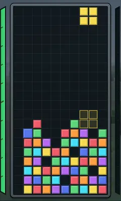

Bandit Elite
Bandit Elite is an elite monster met in Greenshore, Bandit Town, Cyclops Arena and Cultist Tower. A Bandit Town veteran. Tougher than a bandit, with the same stack-piercing arrows.
Attacks
| Attack | Style | What it does | On the board |
|---|---|---|---|
| Bandit Arrow | Ranged | Shoots out a block just under your surface, leaving a hole. Fill the hole before you build over it. |  |
Each clip is the real fight's board, filmed from the game. It plays once it scrolls into view.
Weakness: Triples and Quads hit it 10% harder.
Strategy
How to beat Bandit Elite: gear, skills and what to do on the board, in a player's words.
Locations
- Greenshore, in the Greenshore Story (fights 15, 16 of the road)
- the Endless Dungeon's Bandit Town: an ordinary fight, 60% of them
- the Endless Dungeon's Cyclops Arena: an ordinary fight, 33.33% of them
- the Endless Dungeon's Cultist Tower: an ordinary fight, 25% of them
Combat stats
| Where | Health | Hit | Attacks every |
|---|---|---|---|
| Greenshore Story | 390 | 5–8 | 10s |
| Endless Dungeon, fight 1 | 585 | 8–13 | 6.67s |
| Endless Dungeon, fight 11 | 975 | 10–16 | 5s |
| Endless Dungeon, fight 21 | 1,365 | 10–16 | 5s |
| Dark Endless Dungeon, fight 1 | 780 | 10–16 | 5s |
| Dark Endless Dungeon, fight 11 | 1,170 | 13–21 | 5s |
| Dark Endless Dungeon, fight 21 | 1,560 | 13–21 | 5s |
Hit is the range before your Armor takes its share. In the Endless Dungeon an enemy grows tougher every fight; champions and omens change it further.
Drops
Each kill rolls its table once in the Greenshore Story, twice in the Endless Dungeon and three times in its Dark. Every row is rolled on its own, so a kill can pay several.
| Item | Quantity | Rarity | Log |
|---|---|---|---|
 Gold Coin Gold Coin | 35–45 | 45% | ✓ |
 Rough Leather Rough Leather | 1 | 1/13 | |
 Minor Healing Potion Minor Healing Potion | 1 | 1/15 | ✓ |
 Mithril Ingot Mithril Ingot | 1 | 1/20 | ✓ |
 Maple Plank Maple Plank | 1 | 1/40 | ✓ |
 Cotton Fabric Cotton Fabric | 1 | 1/40 | ✓ |
 Adamantite Ingot Adamantite Ingot | 1 | 1/100 | ✓ |
 Ipe Plank Ipe Plank | 1 | 1/100 | ✓ |
 Nettle Fabric Nettle Fabric | 1 | 1/100 | ✓ |
 Maple Bow Maple Bow | 1 | 1/128 | |
 Mithril Sword Mithril Sword | 1 | 1/128 | |
 Mithril Helmet Mithril Helmet | 1 | 1/128 | |
 Bandit Blade Bandit Blade | 1 | 1/400 | ✓ |
 Treasure Seal Treasure Seal | 1 | 1/500 | ✓ |
Every kill also rolls
| Item | Quantity | Rarity | Notes |
|---|---|---|---|
| Rare Drop table (Greenshore) | — | 1/64 | Once a kill, whatever the mode |
 Respec Orb Respec Orb | 1 | 1/6,024 | A run's first kill; rises each kill to 1/2,000 from the 50th |
 Gilded Ornament Kit Gilded Ornament Kit | 1 | 1/1,000,000 | Every kill everywhere |
Rare Drop table (Greenshore)
One kill in 64 rolls this list once, apart from the enemy's own table. Rare Drops never count toward the Collection Log.
| Item | Quantity | Rarity |
|---|---|---|
| Gold Coin | 100–300 | 1/427 |
 Iron Ingot Iron Ingot | 4–8 | 1/400 |
| Mithril Ingot | 2–4 | 1/533 |
| Maple Plank | 2–4 | 1/640 |
| Cotton Fabric | 2–4 | 1/640 |
 Rugged Hide Rugged Hide | 1–2 | 1/800 |
 Coal Coal | 20–40 | 1/582 |
| Adamantite Ingot | 1 | 1/1,600 |
| Ipe Plank | 1 | 1/1,600 |
| Nettle Fabric | 1 | 1/1,600 |
 Magic Ring Magic Ring | 1 | 1/3,200 |
 Magic Chain Magic Chain | 1 | 1/3,200 |
| Treasure Seal | 1 | 1/6,400 |
| 1–3 | 1/6,400 |
Collection Log
Bandit Elite has a page under ENEMIES in the Collection Log, in its MONSTERS section. It lists:
- Gold Coin
- Minor Healing Potion
- Mithril Ingot
- Maple Plank
- Cotton Fabric
- Adamantite Ingot
- Ipe Plank
- Nettle Fabric
- Bandit Blade
- Treasure Seal
In the game each slot stays hidden until it drops for you.
Gallery

Trivia
Design notes and anything else worth knowing.
Changes
What changed for Bandit Elite, update by update.
| Enemies | |
|---|---|
| Greenshore Story | Zombie · Slime · Squirrel · Cyclops · Oak Entling · Bandit · Bandit King · Super Zombie · Punchy · Shooty · Bernie · Bandit Elite · Cultist · Cult Leader |
| Red Desert: Dust Bowl | Sand Zombie · Wormling · Desert Worm |
| Red Desert: Sand Storm | Raider · Scrap Warlord |
| Red Desert: Pyramids | Sand Zombie · Mummy · Possessed Sarcophagus |
| Red Desert: Sand Cave | Rockling · Cave Spider · Sandstone Golem |
| Red Desert: Research Station | Sand Veil Cultist · Lesser Cult Leader · The Old Man |
| Red Desert: Hellish Desert | The Unbound |
| Elsewhere | Garbage Man · Slime King |